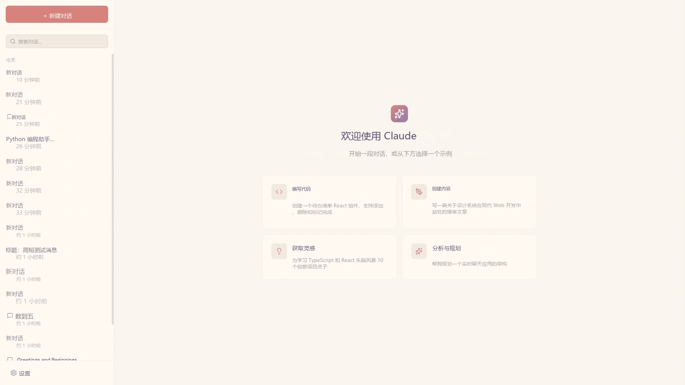

面向长时运行智能体的高效脚手架
📖 中文摘要
专业术语注解
智能体脚手架（harness）：包裹模型、为其提供工具、上下文管理与执行循环的外层框架上下文窗口：模型单次可处理的信息上限，超出后需压缩或开启新会话压缩（compaction）：把长对话摘要压缩，使智能体在有限上下文中继续工作功能清单：初始化智能体生成的JSON格式验收列表，逐项标记功能是否通过端到端测试：像真实用户一样从界面完整验证功能，而非只跑单元测试📄 中文全文
- 类别： 工程（Engineering）
- 来源： https://www.anthropic.com/research/effective-harnesses-for-long-running-agents
工程（Engineering） 2025 年 11 月 26 日 已发布 2025 年 11 月 26 日 团队 工程 主题
相关文章 * 工程 2026 年 3 月 24 日 面向长时运行应用开发的脚手架设计
查看更多 随着 AI 智能体能力不断增强，开发者越来越多地让它们承担需要数小时甚至数天工作的复杂任务。然而，让智能体在多个上下文窗口之间持续取得进展，仍是一个尚未解决的问题。 长时运行智能体的核心挑战在于，它们必须在一个个彼此分离的会话中工作，而每个新会话开始时都对之前发生的一切毫无记忆。想象一个软件项目由轮班工作的工程师承担，每位新来的工程师都不记得上一班发生过什么。由于上下文窗口有限，而大多数复杂项目又无法在单个窗口内完成，智能体需要一种方式来弥合编码会话之间的断层。 我们提出了一套双重解决方案，让 Claude Agent SDK 能够跨多个上下文窗口高效工作：一个在首次运行时搭建环境的初始化智能体，以及一个负责在每次会话中取得增量进展、并为下一次会话留下清晰产物的编码智能体。你可以在配套的快速入门中找到代码示例。
长时运行智能体的问题
Claude Agent SDK 是一套强大、通用的智能体脚手架，既擅长编码，也擅长其他需要模型使用工具来收集上下文、规划并执行的任务。它具备压缩（compaction）等上下文管理能力，使智能体能够在不耗尽上下文窗口的情况下持续处理任务。理论上，有了这样的配置，智能体应该可以持续做任意长时间的有用工作。
然而，仅有压缩还不够。开箱即用时，即便是像 Opus 4.5 这样的前沿编程模型，在 Claude Agent SDK 上跨多个上下文窗口循环运行，如果只给它一个高层面的提示词，例如「构建一个 claude.ai 的克隆」，也无法做出生产质量的 Web 应用。
Claude 的失败表现为两种模式。第一，智能体往往试图一次做太多事——本质上是想一口气把整个应用做完。这常常导致模型在实现到一半时耗尽上下文，留给下一个会话的是一个功能只做了一半、又没有文档的状态。随后智能体不得不猜测之前发生了什么，并花大量时间让基础应用重新跑起来。即便启用了压缩，这种情况依然会发生，因为压缩并不总能给下一个智能体传递完全清晰的指令。
第二种失败模式往往出现在项目后期。当一些功能已经完成后，后续的智能体实例会环顾四周，看到已有进展，便宣布任务完成。
这把问题拆解为两部分。第一，我们需要搭建一个初始环境，为给定提示词所要求的_全部_功能打好基础，让智能体能够一步一步、一个功能一个功能地推进。第二，我们应要求每个智能体朝目标取得增量进展，同时在会话结束时让环境保持干净状态。所谓「干净状态」，指的是适合合并到主分支的那种代码：没有重大缺陷，代码有条理、文档完善，总体上开发者可以轻松开始开发新功能，而不必先去收拾一堆无关的烂摊子。
在内部实验中，我们用一套两部分的方案来解决这些问题：
1. 初始化智能体：首个智能体会话使用一段专门的提示词，要求模型搭建初始环境：一个 init.sh 脚本、一个记录智能体所做工作的 claude-progress.txt 文件，以及一次展示新增了哪些文件的初始 git 提交。
2. 编码智能体：之后的每次会话都要求模型取得增量进展，并留下结构化的更新记录。1
这里的关键洞见，是找到一种方法，让智能体在全新的上下文窗口启动时能迅速了解工作状态——这一点通过 claude-progress.txt 文件配合 git 历史来实现。这些做法的灵感，来自对高效软件工程师日常工作的了解。
环境管理
在更新后的 Claude 4 提示词指南中，我们分享了跨多上下文窗口工作流的一些最佳实践，其中包括一种「为第一个上下文窗口使用不同提示词」的脚手架结构。这个「不同提示词」要求初始化智能体把未来的编码智能体高效工作所需的全部必要上下文都搭建进环境里。这里，我们更深入地介绍这类环境中的几个关键组成部分。
功能清单
为解决智能体一口气做完整个应用、或过早认定项目已完成的问题，我们要求初始化智能体编写一份详尽的功能需求文件，把用户最初的提示词展开细化。在 claude.ai 克隆的示例中，这意味着 200 多项功能，例如「用户可以打开一个新对话、输入查询、按回车，然后看到 AI 的回复」。这些功能最初都被标记为「未通过」（failing），以便后续的编码智能体对完整功能应该是什么样子有一个清晰轮廓。
{
"category": "functional",
"description": "New chat button creates a fresh conversation",
"steps": [
"Navigate to main interface",
"Click the 'New Chat' button",
"Verify a new conversation is created",
"Check that chat area shows welcome state",
"Verify conversation appears in sidebar"
],
"passes": false
}
我们要求编码智能体只能通过修改 passes 字段的状态来编辑这份文件，并使用措辞强硬的指令，例如「删除或编辑测试是不可接受的，因为这可能导致功能缺失或出现缺陷」。经过一些实验后，我们最终选择用 JSON 来实现这一点，因为相比 Markdown 文件，模型不太会不恰当地改动或覆盖 JSON 文件。
增量进展
有了这套初始环境脚手架之后，下一轮迭代的编码智能体被要求每次只处理一个功能。事实证明，这种增量方式对于解决智能体一次做太多事的倾向至关重要。 在按增量方式工作之后，让模型每次改完代码都把环境保持在干净状态仍然至关重要。在实验中，我们发现引导出这种行为的最佳方式，是要求模型把进展以描述性的提交信息提交到 git，并在进度文件中写下进展摘要。这使模型能够借助 git 撤销糟糕的代码改动、恢复到代码库可工作的状态。 这些做法也提升了效率，因为它们免去了智能体猜测之前发生了什么、并花时间让基础应用重新跑起来的需要。
测试
我们观察到的最后一种主要失败模式，是 Claude 倾向于在没有充分测试的情况下就把功能标记为完成。如果没有明确提示，Claude 往往会改动代码，甚至针对开发服务器用单元测试或 curl 命令做测试，却无法意识到该功能端到端并没有真正跑通。
在构建 Web 应用的场景中，一旦明确要求 Claude 使用浏览器自动化工具、并像人类用户那样完成全部测试，它大多能很好地端到端验证功能。

Claude 在测试 claude.ai 克隆时通过 Puppeteer MCP 服务器截取的屏幕截图。为 Claude 提供这类测试工具后，表现大幅提升，因为智能体能够发现并修复仅从代码本身看不出来的缺陷。 仍有一些问题存在，例如 Claude 的视觉能力以及浏览器自动化工具的局限，使得识别所有类型的缺陷变得困难。比如，Claude 无法通过 Puppeteer MCP 看到浏览器原生的 alert 弹窗，依赖这些弹窗的功能因此往往缺陷更多。
快速进入状态
在上述一切就绪后，每个编码智能体都会被要求执行一系列步骤来摸清状况，其中有些相当基础，但依然很有帮助：
1. 运行 pwd 查看你所在的目录。你只能编辑这个目录里的文件。
2. 阅读 git 日志与进度文件，了解最近做过哪些工作。
3. 阅读功能清单文件，选择优先级最高、尚未完成的功能来着手处理。
这种做法在每次会话中为 Claude 省下一些 token，因为它不必再去琢磨如何测试代码。让初始化智能体编写一个能启动开发服务器的 init.sh 脚本，并在实现新功能之前先跑一遍基础的端到端测试，同样很有帮助。 在 claude.ai 克隆的例子中，这意味着智能体总会启动本地开发服务器，并使用 Puppeteer MCP 发起一个新对话、发送一条消息、接收一条回复。这确保了 Claude 能迅速发现应用是否被留在了损坏状态，并立即修复已有缺陷。如果智能体转头去实现新功能，很可能只会让问题更糟。 综合以上种种，一次典型的会话会以如下的助手消息开始：
[Assistant] I'll start by getting my bearings and understanding the current state of the project.
[Tool Use] <bash - pwd>
[Tool Use] <read - claude-progress.txt>
[Tool Use] <read - feature_list.json>
[Assistant] Let me check the git log to see recent work.
[Tool Use] <bash - git log --oneline -20>
[Assistant] Now let me check if there's an init.sh script to restart the servers.
<Starts the development server>
[Assistant] Excellent! Now let me navigate to the application and verify that some fundamental features are still working.
<Tests basic functionality>
[Assistant] Based on my verification testing, I can see that the fundamental functionality is working well. The core chat features, theme switching, conversation loading, and error handling are all functioning correctly. Now let me review the tests.json file more comprehensively to understand what needs to be implemented next.
<Starts work on a new feature>
智能体的失败模式与解决方案
问题
初始化智能体的行为
编码智能体的行为
Claude 过早宣布整个项目大功告成。
建立功能清单文件：根据输入的规格，建立一份结构化 JSON 文件，列出端到端的功能描述。
在会话开始时阅读功能清单文件。只挑选一个功能着手。
Claude 把环境留在有缺陷、或进展没有记录的状态。
写入初始的 git 仓库与进度记录文件。
会话开始时阅读进度记录文件与 git 提交日志，并在开发服务器上跑一次基础测试，以发现任何未记录的缺陷。会话结束时写入一次 git 提交和进度更新。
Claude 过早把功能标记为完成。
建立功能清单文件。
自行验证所有功能。只有在仔细测试之后才把功能标记为「通过」（passing）。
Claude 得花时间琢磨如何运行应用。
编写一个能启动开发服务器的 init.sh 脚本。
会话开始时阅读 init.sh。
总结长时运行 AI 智能体的四种常见失败模式及其解决方案。
未来工作
这项研究展示了一套在长时运行智能体脚手架中可行的方案，使模型能够跨多个上下文窗口取得增量进展。不过，仍有一些悬而未决的问题。 最突出的一点是，目前仍不清楚究竟是单一通用的编码智能体跨上下文表现最好，还是通过多智能体架构能取得更好的效果。有理由认为，像测试智能体、质量保证智能体或代码清理智能体这样的专用智能体，在软件开发生命周期的各个子任务上可以做得更好。 此外，这个演示是针对全栈 Web 应用开发优化的。未来的一个方向是把这些发现推广到其他领域。这些经验中的部分或全部，很可能同样适用于科学研究或金融建模等领域所需的长时运行智能体任务。
脚注
01 我们之所以在这里把它们称为不同的智能体，只是因为它们有不同的初始用户提示词。除此之外，系统提示词、工具集以及整体智能体脚手架都是完全相同的。
作者与致谢
致谢
本文由 Justin Young 撰写。特别感谢 David Hershey、Prithvi Rajasakeran、Jeremy Hadfield、Naia Bouscal、Michael Tingley、Jesse Mu、Jake Eaton、Marius Buleandara、Maggie Vo、Pedram Navid、Nadine Yasser 和 Alex Notov 的贡献。 这项工作凝聚了 Anthropic 多个团队的共同努力，正是他们让 Claude 能够安全地完成长时程自主软件工程，尤其是 code RL 与 Claude Code 团队。欢迎有兴趣贡献的候选人前往 anthropic.com/careers 申请。
▸ 英文原文（点击展开）
Effective harnesses for long-running agents
- Date: 2025-11-26
- Category: Copy
- Source: https://www.anthropic.com/research/effective-harnesses-for-long-running-agents
Effective harnesses for long-running agents
Published Nov 26, 2025 Team Engineering Topics
Related articles * Engineering Mar 24, 2026 Harness design for long-running application development
View more As AI agents become more capable, developers are increasingly asking them to take on complex tasks requiring work that spans hours, or even days. However, getting agents to make consistent progress across multiple context windows remains an open problem. The core challenge of long-running agents is that they must work in discrete sessions, and each new session begins with no memory of what came before. Imagine a software project staffed by engineers working in shifts, where each new engineer arrives with no memory of what happened on the previous shift. Because context windows are limited, and because most complex projects cannot be completed within a single window, agents need a way to bridge the gap between coding sessions. We developed a two-fold solution to enable the Claude Agent SDK to work effectively across many context windows: an initializer agent that sets up the environment on the first run, and a coding agent that is tasked with making incremental progress in every session, while leaving clear artifacts for the next session. You can find code examples in the accompanying quickstart.
The long-running agent problem
The Claude Agent SDK is a powerful, general-purpose agent harness adept at coding, as well as other tasks that require the model to use tools to gather context, plan, and execute. It has context management capabilities such as compaction, which enables an agent to work on a task without exhausting the context window. Theoretically, given this setup, it should be possible for an agent to continue to do useful work for an arbitrarily long time.
However, compaction isn’t sufficient. Out of the box, even a frontier coding model like Opus 4.5 running on the Claude Agent SDK in a loop across multiple context windows will fall short of building a production-quality web app if it’s only given a high-level prompt, such as “build a clone of claude.ai.”
Claude’s failures manifested in two patterns. First, the agent tended to try to do too much at once—essentially to attempt to one-shot the app. Often, this led to the model running out of context in the middle of its implementation, leaving the next session to start with a feature half-implemented and undocumented. The agent would then have to guess at what had happened, and spend substantial time trying to get the basic app working again. This happens even with compaction, which doesn’t always pass perfectly clear instructions to the next agent.
A second failure mode would often occur later in a project. After some features had already been built, a later agent instance would look around, see that progress had been made, and declare the job done.
This decomposes the problem into two parts. First, we need to set up an initial environment that lays the foundation for all the features that a given prompt requires, which sets up the agent to work step-by-step and feature-by-feature. Second, we should prompt each agent to make incremental progress towards its goal while also leaving the environment in a clean state at the end of a session. By “clean state” we mean the kind of code that would be appropriate for merging to a main branch: there are no major bugs, the code is orderly and well-documented, and in general, a developer could easily begin work on a new feature without first having to clean up an unrelated mess.
When experimenting internally, we addressed these problems using a two-part solution:
1. Initializer agent: The very first agent session uses a specialized prompt that asks the model to set up the initial environment: an init.sh script, a claude-progress.txt file that keeps a log of what agents have done, and an initial git commit that shows what files were added.
2. Coding agent: Every subsequent session asks the model to make incremental progress, then leave structured updates.1
The key insight here was finding a way for agents to quickly understand the state of work when starting with a fresh context window, which is accomplished with the claude-progress.txt file alongside the git history. Inspiration for these practices came from knowing what effective software engineers do every day.
Environment management
In the updated Claude 4 prompting guide, we shared some best practices for multi-context window workflows, including a harness structure that uses “a different prompt for the very first context window.” This “different prompt” requests that the initializer agent set up the environment with all the necessary context that future coding agents will need to work effectively. Here, we provide a deeper dive on some of the key components of such an environment.
Feature list
To address the problem of the agent one-shotting an app or prematurely considering the project complete, we prompted the initializer agent to write a comprehensive file of feature requirements expanding on the user’s initial prompt. In the claude.ai clone example, this meant over 200 features, such as “a user can open a new chat, type in a query, press enter, and see an AI response.” These features were all initially marked as “failing” so that later coding agents would have a clear outline of what full functionality looked like.
{
"category": "functional",
"description": "New chat button creates a fresh conversation",
"steps": [
"Navigate to main interface",
"Click the 'New Chat' button",
"Verify a new conversation is created",
"Check that chat area shows welcome state",
"Verify conversation appears in sidebar"
],
"passes": false
}
We prompt coding agents to edit this file only by changing the status of a passes field, and we use strongly-worded instructions like “It is unacceptable to remove or edit tests because this could lead to missing or buggy functionality.” After some experimentation, we landed on using JSON for this, as the model is less likely to inappropriately change or overwrite JSON files compared to Markdown files.
Incremental progress
Given this initial environment scaffolding, the next iteration of the coding agent was then asked to work on only one feature at a time. This incremental approach turned out to be critical to addressing the agent’s tendency to do too much at once. Once working incrementally, it’s still essential that the model leaves the environment in a clean state after making a code change. In our experiments, we found that the best way to elicit this behavior was to ask the model to commit its progress to git with descriptive commit messages and to write summaries of its progress in a progress file. This allowed the model to use git to revert bad code changes and recover working states of the code base. These approaches also increased efficiency, as they eliminated the need for an agent to have to guess at what had happened and spend its time trying to get the basic app working again.
Testing
One final major failure mode that we observed was Claude’s tendency to mark a feature as complete without proper testing. Absent explicit prompting, Claude tended to make code changes, and even do testing with unit tests or curl commands against a development server, but would fail recognize that the feature didn’t work end-to-end.
In the case of building a web app, Claude mostly did well at verifying features end-to-end once explicitly prompted to use browser automation tools and do all testing as a human user would.
Screenshots taken by Claude through the Puppeteer MCP server as it tested the claude.ai clone.
Providing Claude with these kinds of testing tools dramatically improved performance, as the agent was able to identify and fix bugs that weren’t obvious from the code alone. Some issues remain, like limitations to Claude’s vision and to browser automation tools making it difficult to identify every kind of bug. For example, Claude can’t see browser-native alert modals through the Puppeteer MCP, and features relying on these modals tended to be buggier as a result.
Getting up to speed
With all of the above in place, every coding agent is prompted to run through a series of steps to get its bearings, some quite basic but still helpful:
1. Runpwd to see the directory you’re working in. You’ll only be able to edit files in this directory.
2. Read the git logs and progress files to get up to speed on what was recently worked on.
3. Read the features list file and choose the highest-priority feature that’s not yet done to work on.
This approach saves Claude some tokens in every session since it doesn’t have to figure out how to test the code. It also helps to ask the initializer agent to write an init.sh script that can run the development server, and then run through a basic end-to-end test before implementing a new feature. In the case of the claude.ai clone, this meant that the agent always started the local development server and used the Puppeteer MCP to start a new chat, send a message, and receive a response. This ensured that Claude could quickly identify if the app had been left in a broken state, and immediately fix any existing bugs. If the agent had instead started implementing a new feature, it would likely make the problem worse. Given all this, a typical session starts off with the following assistant messages:
[Assistant] I'll start by getting my bearings and understanding the current state of the project.
[Tool Use] <bash - pwd>
[Tool Use] <read - claude-progress.txt>
[Tool Use] <read - feature_list.json>
[Assistant] Let me check the git log to see recent work.
[Tool Use] <bash - git log --oneline -20>
[Assistant] Now let me check if there's an init.sh script to restart the servers.
<Starts the development server>
[Assistant] Excellent! Now let me navigate to the application and verify that some fundamental features are still working.
<Tests basic functionality>
[Assistant] Based on my verification testing, I can see that the fundamental functionality is working well. The core chat features, theme switching, conversation loading, and error handling are all functioning correctly. Now let me review the tests.json file more comprehensively to understand what needs to be implemented next.
<Starts work on a new feature>
Agent failure modes and solutions
Problem
Initializer Agent Behavior
Coding Agent Behavior
Claude declares victory on the entire project too early.
Set up a feature list file: based on the input spec, set up a structured JSON file with a list of end-to-end feature descriptions.
Read the feature list file at the beginning of a session. Choose a single feature to start working on.
Claude leaves the environment in a state with bugs or undocumented progress.
An initial git repo and progress notes file is written.
Start the session by reading the progress notes file and git commit logs, and run a basic test on the development server to catch any undocumented bugs. End the session by writing a git commit and progress update.
Claude marks features as done prematurely.
Set up a feature list file.
Self-verify all features. Only mark features as “passing” after careful testing.
Claude has to spend time figuring out how to run the app.
Write an init.sh script that can run the development server.
Start the session by reading init.sh.
Summarizing four common failure modes and solutions in long-running AI agents.
Future work
This research demonstrates one possible set of solutions in a long-running agent harness to enable the model to make incremental progress across many context windows. However, there remain open questions. Most notably, it’s still unclear whether a single, general-purpose coding agent performs best across contexts, or if better performance can be achieved through a multi-agent architecture. It seems reasonable that specialized agents like a testing agent, a quality assurance agent, or a code cleanup agent, could do an even better job at sub-tasks across the software development lifecycle. Additionally, this demo is optimized for full-stack web app development. A future direction is to generalize these findings to other fields. It’s likely that some or all of these lessons can be applied to the types of long-running agentic tasks required in, for example, scientific research or financial modeling.
Footnotes
01We refer to these as separate agents in this context only because they have different initial user prompts. The system prompt, set of tools, and overall agent harness was otherwise identical.
Authors & acknowledgements
Acknowledgements
Written by Justin Young. Special thanks to David Hershey, Prithvi Rajasakeran, Jeremy Hadfield, Naia Bouscal, Michael Tingley, Jesse Mu, Jake Eaton, Marius Buleandara, Maggie Vo, Pedram Navid, Nadine Yasser, and Alex Notov for their contributions. This work reflects the collective efforts of several teams across Anthropic who made it possible for Claude to safely do long-horizon autonomous software engineering, especially the code RL & Claude Code teams. Interested candidates who would like to contribute are welcome to apply at anthropic.com/careers.